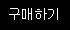

준비물은 간단하게 종이, 지우개, 볼펜, 연필만 있어도 그만이고, 여기에 자신의 취향과 개성에 맞춰 여러 필기구를 준비해주세요. 아래의 표로 개인적으로 써보고 좋았던 도구들과 브랜드를 나열해보겠습니다. 이걸 그대로 사서 쓰셔도 되고 갖고 계신걸 쓰셔도 좋습니다. 저와 똑같은 드로잉 환경을 만들고 싶으신분들을 재료 설명을 읽고 참고하시며 준비하시면 되겠습니다. 준비물보다 더 중요한 건 마음의 준비입니다~!
| 준비물 | 설명 | 구매처 |
|---|---|---|
| 종이 | 가장 중요하면서 가장 흔합니다. 프린트용 a4용지를 쓰셔도 되고 스케치북 등의 전문가용 종이를 사셔도 됩니다. 저는 무림제지의 a4 켄트지를 사서 씁니다. |
 |
| 연필 | 연필은 잘 지워지는 것일수록 좋으며 h2와 hb경도의 연필이 가장 좋습니다. 쓸 때엔 종이에 상처가 남지 않도록 살살 쓰는 연습을 합시다. 저는 스테들러의 제품을 가장 좋아합니다. |
|
| 지우개 | 지우개는 딱딱한 물건보다는 부드럽고 종이를 망가뜨리지 않는 소재일수록 좋습니다. 플라스틱,고무 상관없이 브랜드가 품질을 많이 좌우하며, 저는 스테들러나 톰보 지우개를 사용합니다. |
|
| 볼펜 | 볼펜은 간단히 스케치한 종이에 선을 그리고 지우개를 쓸 때 연필선만 지워지도록 하며 볼펜똥이 안 남고 부드럽게 쓰이는 제품이면 무엇이든 좋습니다. 저는 유니 스타일핏 0.28mm를 가장 좋아합니다. |
|
| 기름종이 | 이건 그림연습을 할 때 쓰는 것인데, 스케치를 두 번 하기 번거롭거나 다른 연습물과 비교하기 위해 씁니다. 교재나 스케치 위에 기름종이를 깔고 거기에 볼펜선을 그리는 식으로 씁니다.(선택사항) |
우선 이 페이지에선 한선그림 따라그리기 연습을 위주로 진행할 생각이지만, 다음에라도 자신만의 그림을 그리기 위해서는 연필 스케치 연습을 꾸준히 하셔야합니다.
제가 다른 분들을 가르칠 때 참고했던 유투브 영상 두개를 올려드릴테니, 천천히 연습해보며 나중엔 자립적인 그림을 그릴 수 있도록 해봅시다.
이제 대략적인 준비가 끝났습니다. 스케치 연습은 꾸준히 연습하시고 준비물이 갖춰지셨다면 강의를 시청하시면 됩니다. 화이팅!